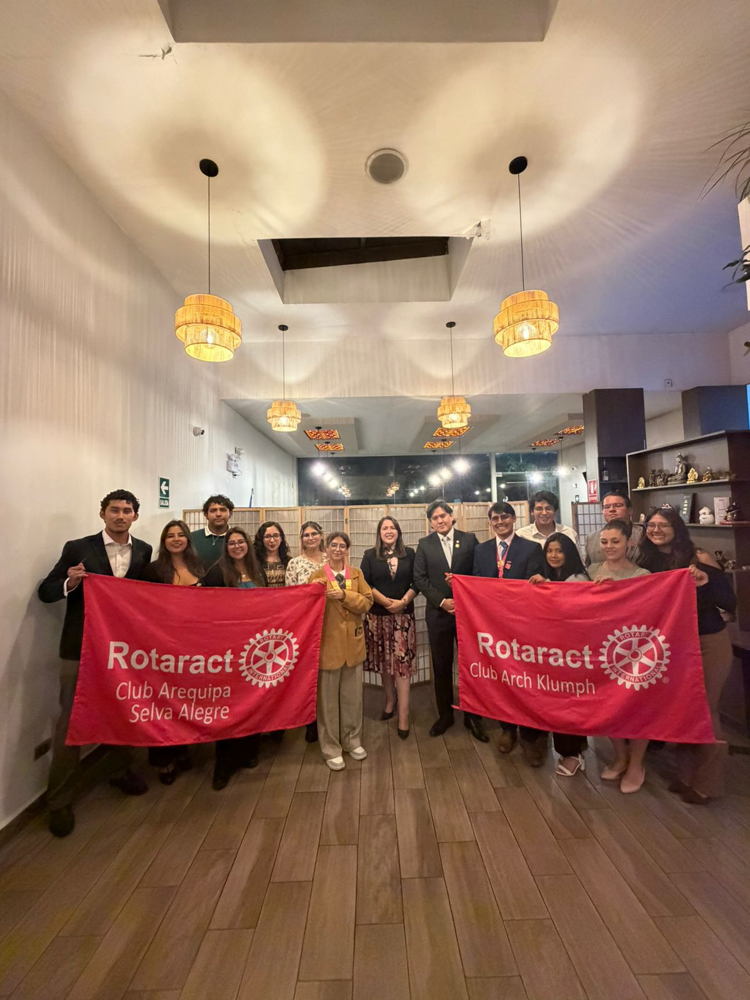
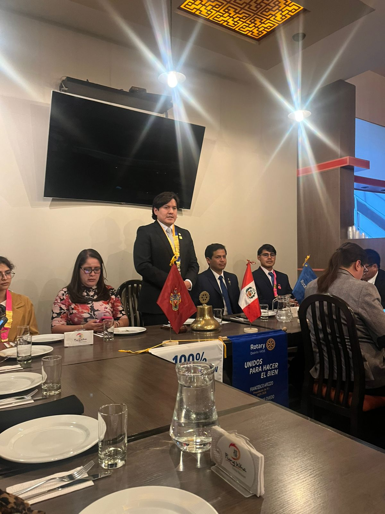
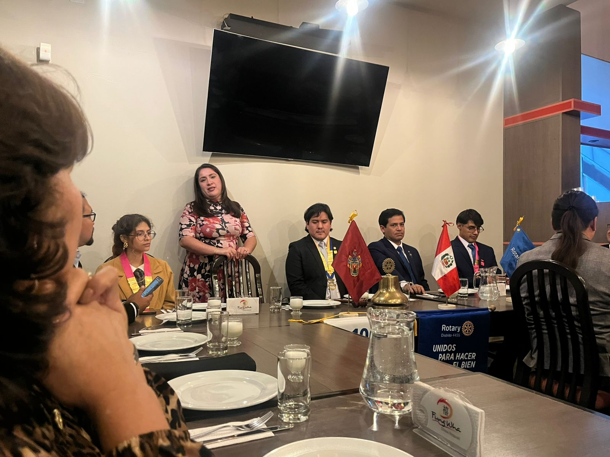

26 de Marzo, 2026
Visita oficial y nuevas incorporaciones en el Rotary Club Arequipa Selva Alegre
En el marco de su mes de aniversario, el Rotary Club Arequipa Selva Alegre recibió la visita oficial de la gobernadora del Distrito 4455, Gloria Lamas. La ceremonia fue presidida por el presidente del club, Jorge Meza, y contó con la participación de autoridades rotarias e integrantes de los clubes aliados.
Durante la jornada, se incorporaron dos nuevos socios, Alex Cuadros y Evelyn Oblitas, quienes asumen su compromiso de servicio con la institución.



